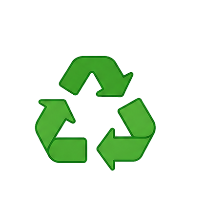

Puntos de reciclaje
Puntos de donación
Centros de acopio
Eventos de reciclaje

¿Sabías qué?
Reciclar 1 botella de plástico ahorra suficiente energía para iluminar una bombilla por 6 horas.


Explora tu ciudad y encuentra
puntos de reciclaje y donación
cercanos.

Aprende, actúa y genera impacto positivo.
Explora tu ciudad y encuentra puntos de reciclaje y donación cercanos.
Usa los filtros para buscar por tipo de material o servicio.